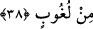

sordum. “İki şey için ağlıyorum, birincisi lânet kapısı benim için açıldı diğeri ise
mü’minin kalbinin kapısı benim için kapandı. Ne zaman mü’minin gönlünün kapısından
içeri girmeye çalışsam heybet ateşiyle yanıyorum” diye cevap verdi.
Dâvud (a.s.)’a şöyle vahiy gelmiştir; “Ey Dâvûd! Dilin dâvâ pazarının başında
bağıran dellâl gibidir, din padişahının mülkünün kalbinde ona yer yoktur. Orada ancak
ahadiyyet ve ezeliyet sırlarının kokusu yayılan gönüle yer vardır.”
Mısır Azizi (Yusuf a.s.) kardeşlerine şöyle demişti: “Eşyalarınızı alıp kendi ülkenize
ve yurdunuza dönünüz. Çünkü sizin kalplerinizden Yusuf’un iyilik kokusu gelmiyor.”
Âlemlerin Rabbı’nın; “işte bunda çok güzel öğüt vardır” buyruğunun sırrı budur.
“Bir öğüt vardır.” Büyüklerden birisi, işitmenin hakikatinin, enfüs ve âfâkta sana
tilavet ettiklerinde Allah’ı anlamak olduğunu söylemiştir. Zira Hak Kitab’ı sana kimi
zaman büyük ve dışarıda olandan tilâvet ederken kimi zaman da nefsinden tilavet eder.
Buna kulak ver ve Mevlâ’nın sana olan hitabına her neredeysen hazır ol. Kulağındaki
ağırlıktan ve sağırlıktan kurtul. Sağırlık, Furkân diye tâbir olunan, büyük kitabın sana
tilâvet ettiği şeyleri idrak etmene mâni olan bir âfettir. Kulaktaki ağırlık ise Kur’ân diye
tabir olunan, nefsinin içindeki saklı tilaveti idrak etmene mâni olan âfettir. Çünkü insan,
büyük âlemde birbirinden ayrılan şeylerin birleşme mahallidir.
38. Andolsun biz, gökleri, yeri ve ikisi arasında bulunanları altı günde yarattık.
Bize hiçbir yorgunluk çökmedi.
“Andolsun biz, gökleri, yeri ve ikisi arasında bulunanları altı günde yarattık.”
Semalar, arz ve bunların arasında yer alan türlü mahlûkât, pazar gününden cumartesi
gününe kadar altı günde yaratılmıştır. Arz iki günde, arzda yer alan faydalı şeyler iki
günde ve semalar da iki günde yaratılmıştır. Allah dileseydi bütün bunları göz açıp
kapamaktan daha kısa bir sürede de yaratabilirdi. Ancak bize böylece teennîyi
öğretmiştir. Zira acelecilik şeytandandır. Bunun altı istisnası vardır: 1. Vakit girince
namazın edası, 2. Cenazenin defni, 3. Bekâr kızların vakti gelince evlendirilmesi, 4.
Borcun vadesi gelince ödenmesi, 5. Misafir geldiğinde yemek ikrâm edilmesi ve 6.
Günaha girince tevbe edilmesi.
Âriflerden biri şöyle demiştir: Allah sana tasarrufta bulunma kapısını açsa da, sen
yine evlere kapılarından gir. Âletsiz, himmetle iş görmekten sakın! Allah’ın Âdem’in
balçığını nasıl kendi elleriyle yoğurduğuna, düzleyip kıvama getirdiğine, ardından ona
ruh üflediğine, esmayı öğrettiğine; yani herşeyi bir tertib ve düzen içinde var ettiğine
bakmalısın. Hâlbuki Allah, Âdem’i hamurunu yoğurmadan ve diğer zikredilen şeyleri